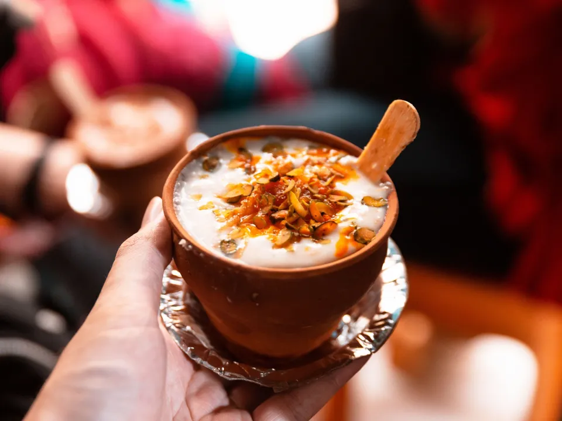

Lassi
A quintessential summer drink that is in part a thirst quencher and in part a nostalgia-laced tumbler of cold potion. For most of us, the summer evenings of our childhood comprised hanging by our parents' arms, going into the market and taking a lassi break after much walking. The big man in the shop would stir up a cauldron of white and pour it from a great height into different-sized earthen tumblers&mdashthe large size for the adults and the mini ones for the kids. The yoghurt-based cold smoothie originated in the Punjab region and is made by blending Indian curd, water and some spices. Even though a thorough Punjabi drink, lassi is famous in all parts of India. Here is a list of some of the best lassi shops in Varanasi that you must visit if you're travelling during the summer.
